2023 Advanced Higher Mathematics - Paper 1 marking instructions
Source: Scottish Qualifications Authority (SQA) / Qualifications Scotland. This is a StemInteract HTML companion, not an official HTML edition. Selectable text is supplied alongside original page images. Use the images or original PDF for equations, powers, fractions, vector notation, tables and diagrams; text extraction cannot fully preserve mathematical layout.
Jump to a question
PDF page 1
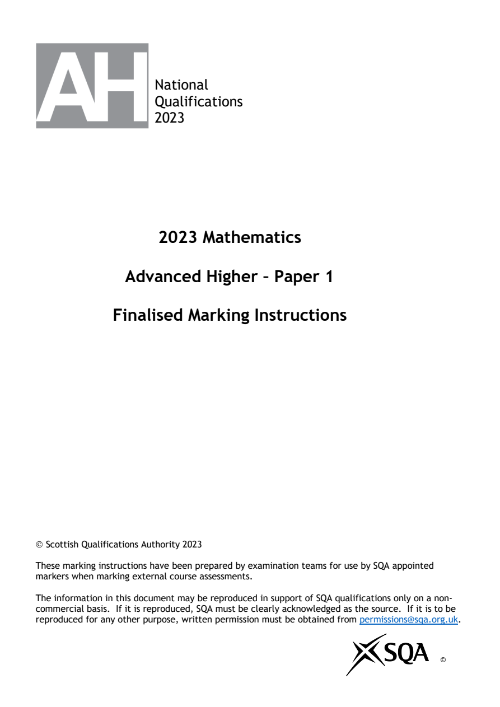
Selectable page text
National
Qualifications
2023
2023 Mathematics
Advanced Higher – Paper 1
Finalised Marking Instructions
Scottish Qualifications Authority 2023
These marking instructions have been prepared by examination teams for use by SQA appointed
markers when marking external course assessments.
The information in this document may be reproduced in support of SQA qualifications only on a non-
commercial basis. If it is reproduced, SQA must be clearly acknowledged as the source. If it is to be
reproduced for any other purpose, written permission must be obtained from permissions@sqa.org.uk.
©PDF page 2
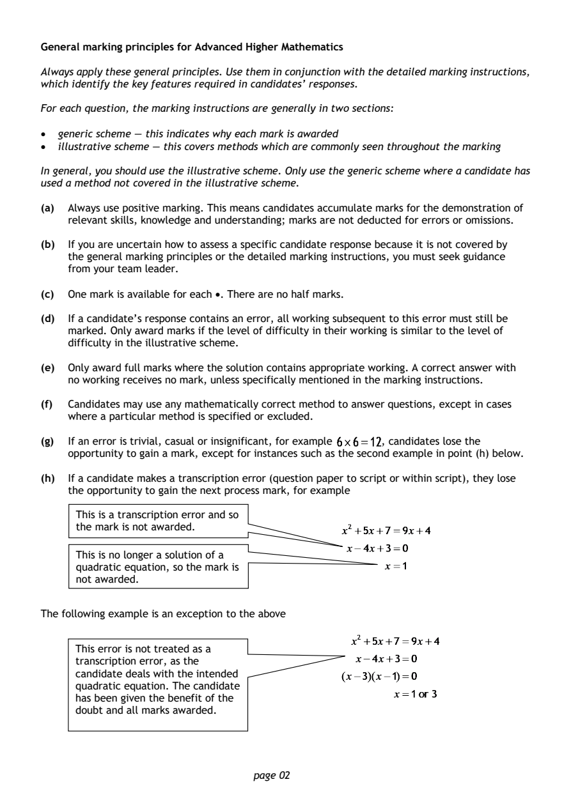
Selectable page text
General marking principles for Advanced Higher Mathematics
Always apply these general principles. Use them in conjunction with the detailed marking instructions,
which identify the key features required in candidates’ responses.
For each question, the marking instructions are generally in two sections:
• generic scheme — this indicates why each mark is awarded
• illustrative scheme — this covers methods which are commonly seen throughout the marking
In general, you should use the illustrative scheme. Only use the generic scheme where a candidate has
used a method not covered in the illustrative scheme.
(a) Always use positive marking. This means candidates accumulate marks for the demonstration of
relevant skills, knowledge and understanding; marks are not deducted for errors or omissions.
(b) If you are uncertain how to assess a specific candidate response because it is not covered by
the general marking principles or the detailed marking instructions, you must seek guidance
from your team leader.
(c) One mark is available for each •. There are no half marks.
(d) If a candidate’s response contains an error, all working subsequent to this error must still be
marked. Only award marks if the level of difficulty in their working is similar to the level of
difficulty in the illustrative scheme.
(e) Only award full marks where the solution contains appropriate working. A correct answer with
no working receives no mark, unless specifically mentioned in the marking instructions.
(f) Candidates may use any mathematically correct method to answer questions, except in cases
where a particular method is specified or excluded.
(g) If an error is trivial, casual or insignificant, for example , candidates lose the
opportunity to gain a mark, except for instances such as the second example in point (h) below.
(h) If a candidate makes a transcription error (question paper to script or within script), they lose
the opportunity to gain the next process mark, for example
This is a transcription error and so
the mark is not awarded.
This is no longer a solution of a
quadratic equation, so the mark is
not a warded.
The following example is an exception to the above
This error is not treated as a
transcription error, as the
candidate deals with the intended
quadratic equation. The candidate
has been given the benefit of the
doubt and all marks awarded.
page 02PDF page 3
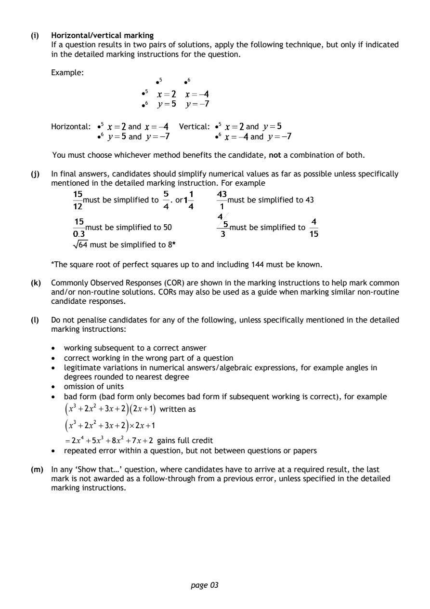
Selectable page text
(i) Horizontal/vertical marking
If a question results in two pairs of solutions, apply the following technique, but only if indicated
in the detailed marking instructions for the question.
Example:
•5 •6
•5
•6
Horizontal: •5 and Vertical: •⁵ and
•6 and •6 and
You must choose whichever method benefits the candidate, not a combination of both.
(j) In final answers, candidates should simplify numerical values as far as possible unless specifically
mentioned in the detailed marking instruction. For example
must be simplified to . or must be simplified to 43
must be simplified to 50 must be simplified to
64 must be simplified to 8*
*The square root of perfect squares up to and including 144 must be known.
(k) Commonly Observed Responses (COR) are shown in the marking instructions to help mark common
and/or non-routine solutions. CORs may also be used as a guide when marking similar non-routine
candidate responses.
(l) Do not penalise candidates for any of the following, unless specifically mentioned in the detailed
marking instructions:
• working subsequent to a correct answer
• correct working in the wrong part of a question
• legitimate variations in numerical answers/algebraic expressions, for example angles in
degrees rounded to nearest degree
• omission of units
• bad form (bad form only becomes bad form if subsequent working is correct), for example
( x³ +2x² +3x+2 )( 2x+1 ) written as
( )
x³ +2x² +3x+2 ×2x+1
=2x⁴ +5x³ +8x² +7x+2 gains full credit
• repeated error within a question, but not between questions or papers
(m) In any ‘Show that…’ question, where candidates have to arrive at a required result, the last
mark is not awarded as a follow-through from a previous error, unless specified in the detailed
marking instructions.
page 03PDF page 4
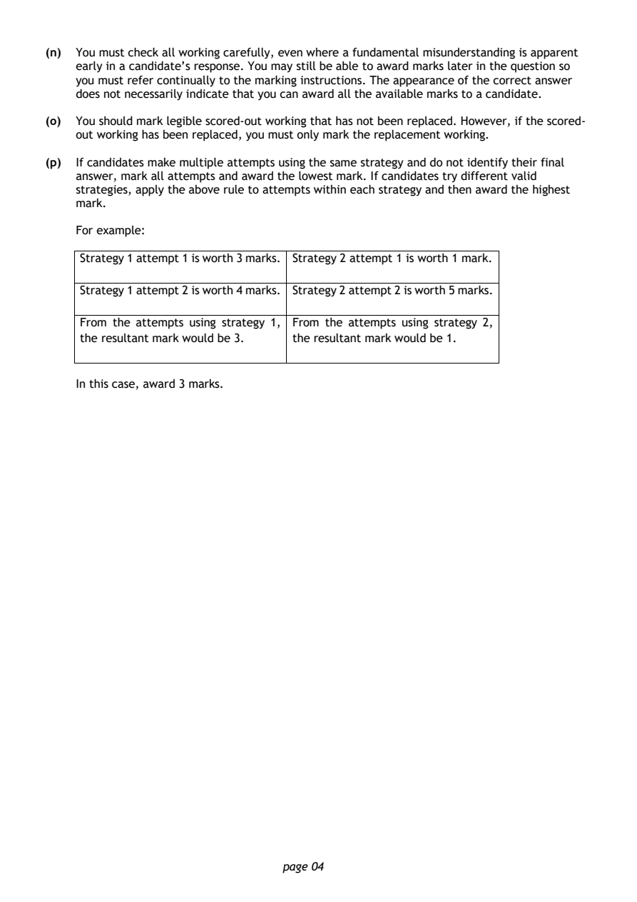
Selectable page text
(n) You must check all working carefully, even where a fundamental misunderstanding is apparent
early in a candidate’s response. You may still be able to award marks later in the question so
you must refer continually to the marking instructions. The appearance of the correct answer
does not necessarily indicate that you can award all the available marks to a candidate.
(o) You should mark legible scored-out working that has not been replaced. However, if the scored-
out working has been replaced, you must only mark the replacement working.
(p) If candidates make multiple attempts using the same strategy and do not identify their final
answer, mark all attempts and award the lowest mark. If candidates try different valid
strategies, apply the above rule to attempts within each strategy and then award the highest
mark.
For example:
Strategy 1 attempt 1 is worth 3 marks. Strategy 2 attempt 1 is worth 1 mark.
Strategy 1 attempt 2 is worth 4 marks. Strategy 2 attempt 2 is worth 5 marks.
From the attempts using strategy 1, From the attempts using strategy 2,
the resultant mark would be 3. the resultant mark would be 1.
In this case, award 3 marks.
page 04PDF page 5
Paper 1, Question 1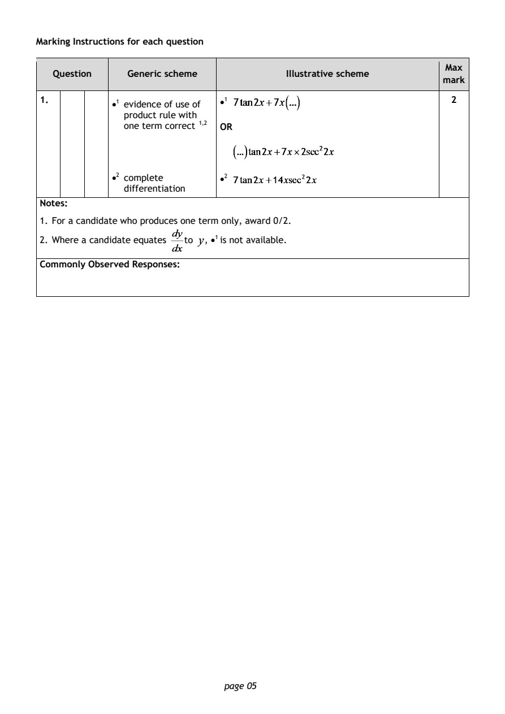
Selectable page text
Marking Instructions for each question
Max
Question Generic scheme Illustrative scheme
mark
1. •1 evidence of use of •1 2
product rule with
one term correct ¹^{,}² OR
•2 complete •2
differentiation
Notes:
1. For a candidate who produces one term only, award 0/2.
2. Where a candidate equates to , •1 is not available.
Commonly Observed Responses:
page 05PDF page 6
Paper 1, Question 2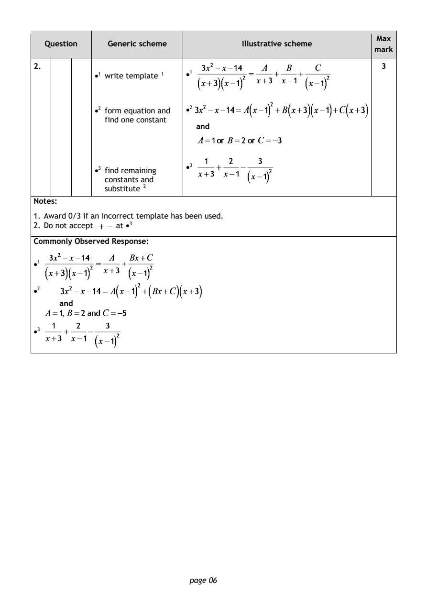
Selectable page text
Max
Question Generic scheme Illustrative scheme
mark
2. 3
•1 write template ¹ •1
•2 form equation and •2
find one constant
and
•3 find remaining
•3
constants and
substitute ²
Notes:
1. Award 0/3 if an incorrect template has been used.
2. Do not accept at •³
Commonly Observed Response:
•1
•2
and
•3
page 06PDF page 7
Paper 1, Question 3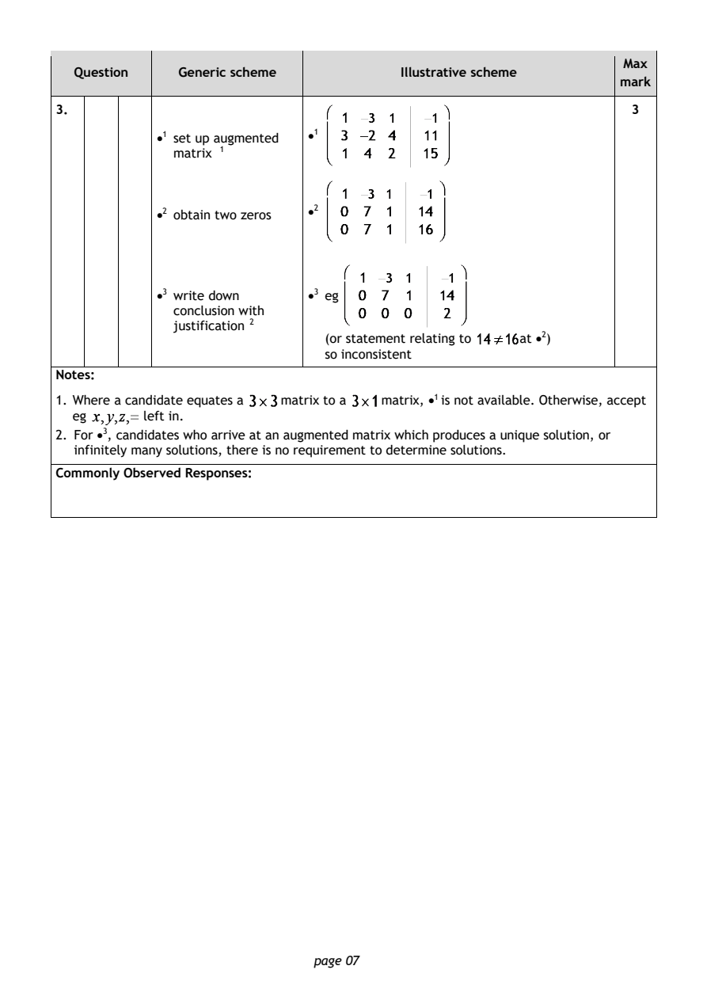
Selectable page text
Max
Question Generic scheme Illustrative scheme
mark
3. 3
•1 set up augmented •1
matrix ¹
•2 obtain two zeros •2
•3 write down •3 eg
conclusion with
justification ²
(or statement relating to at •²)
so inconsistent
Notes:
1. Where a candidate equates a matrix to a matrix, •¹ is not available. Otherwise, accept
eg left in.
2. For •³, candidates who arrive at an augmented matrix which produces a unique solution, or
infinitely many solutions, there is no requirement to determine solutions.
Commonly Observed Responses:
page 07PDF page 8
Paper 1, Question 4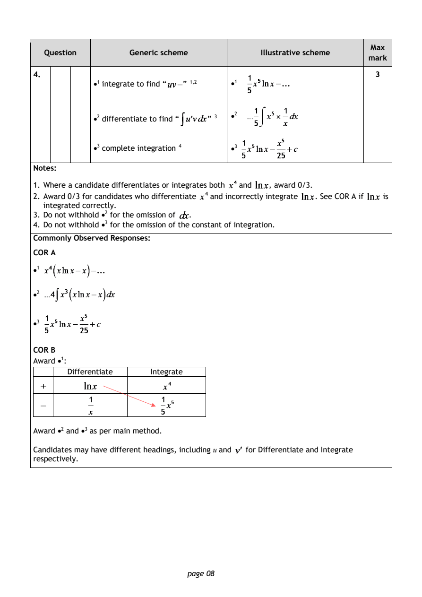
Selectable page text
Max
Question Generic scheme Illustrative scheme
mark
4. 3
•1 integrate to find “ ” 1,2 •1
•2 differentiate to find “ ” 3
•2
•3 complete integration ⁴ •3
Notes:
1. Where a candidate differentiates or integrates both and , award 0/3.
2. Award 0/3 for candidates who differentiate and incorrectly integrate . See COR A if is
integrated correctly.
3. Do not withhold •² for the omission of .
4. Do not withhold •³ for the omission of the constant of integration.
Commonly Observed Responses:
COR A
•1
•2
•3
COR B
Award •¹:
Differentiate Integrate
Award •² and •³ as per main method.
Candidates may have different headings, including u and for Differentiate and Integrate
respectively.
page 08PDF page 9
Paper 1, Question 5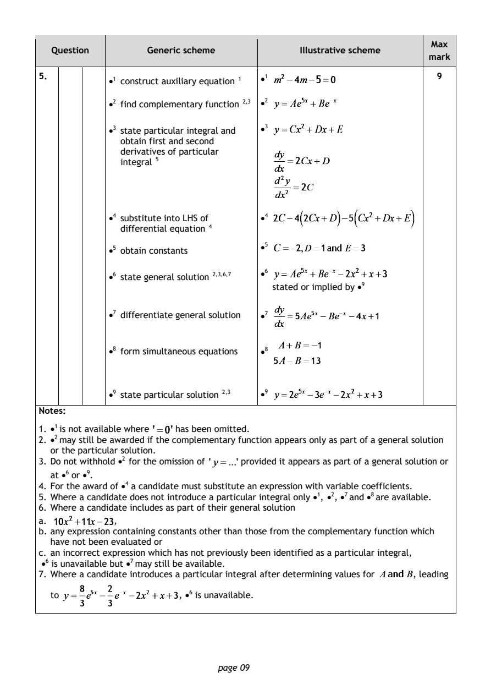
Selectable page text
Max
Question Generic scheme Illustrative scheme
mark
5. •1 construct auxiliary equation ¹ •1 9
•2 find complementary function ²^{,}³ •2
•3 state particular integral and •3
obtain first and second
derivatives of particular
integral ⁵
•4 substitute into LHS of •4
differential equation ⁴
•5 obtain constants
•5
•6 state general solution ²^{,}³^{,}⁶,7
•6
stated or implied by •⁹
•7 differentiate general solution •7
•8 form simultaneous equations •8
•9 state particular solution ²^{,}³ •9
Notes:
1. •¹ is not available where has been omitted.
2. •² may still be awarded if the complementary function appears only as part of a general solution
or the particular solution.
3. Do not withhold •² for the omission of provided it appears as part of a general solution or
at •⁶ or •⁹.
4. For the award of •⁴ a candidate must substitute an expression with variable coefficients.
5. Where a candidate does not introduce a particular integral only •¹, •2, •7 and •⁸ are available.
6. Where a candidate includes as part of their general solution
a. ,
b. any expression containing constants other than those from the complementary function which
have not been evaluated or
c. an incorrect expression which has not previously been identified as a particular integral,
•6 is unavailable but •⁷ may still be available.
7. Where a candidate introduces a particular integral after determining values for , leading
to , •6 is unavailable.
page 09PDF page 10
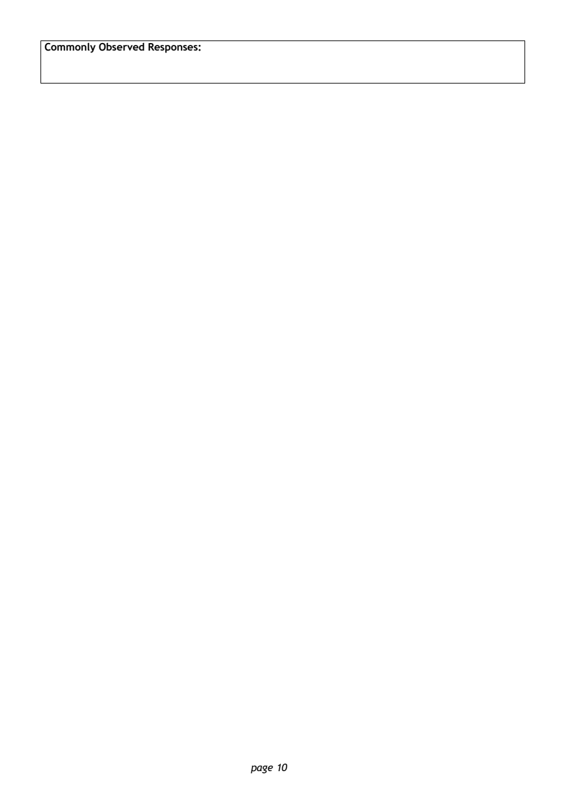
Selectable page text
Commonly Observed Responses:
page 10PDF page 11
Paper 1, Question 6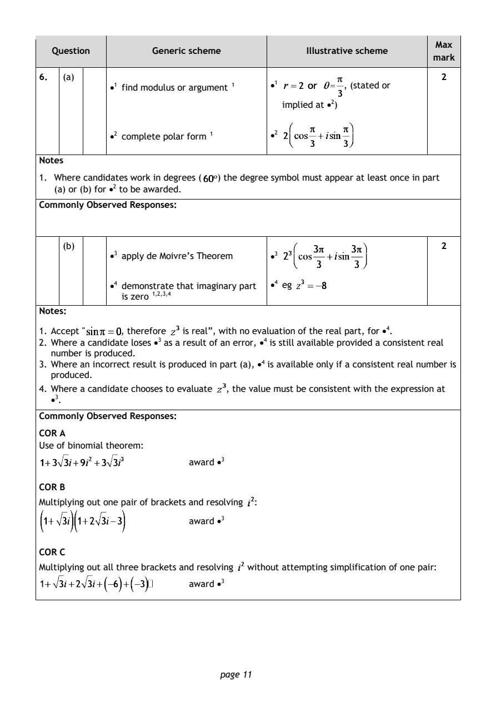
Selectable page text
Max
Question Generic scheme Illustrative scheme
mark
6. (a) 2
•1 find modulus or argument ¹ •1 , (stated or
implied at •²)
•2 complete polar form ¹ •2
Notes
1. Where candidates work in degrees ( ) the degree symbol must appear at least once in part
(a) or (b) for •² to be awarded.
Commonly Observed Responses:
(b) 2
•3 apply de Moivre’s Theorem •3
•4 demonstr_{,}a₃t_{,}₄e that imaginary part •4 eg
is zero ¹^{,}²
Notes:
1. Accept " , therefore is real”, with no evaluation of the real part, for •⁴.
2. Where a candidate loses •³ as a result of an error, •⁴ is still available provided a consistent real
number is produced.
3. Where an incorrect result is produced in part (a), •⁴ is available only if a consistent real number is
produced.
4. Where a candidate chooses to evaluate , the value must be consistent with the expression at
•3.
Commonly Observed Responses:
COR A
Use of binomial theorem:
award •³
COR B
Multiplying out one pair of brackets and resolving :
award •³
COR C
Multiplying out all three brackets and resolving without attempting simplification of one pair:
award •³
page 11PDF page 12
Paper 1, Question 7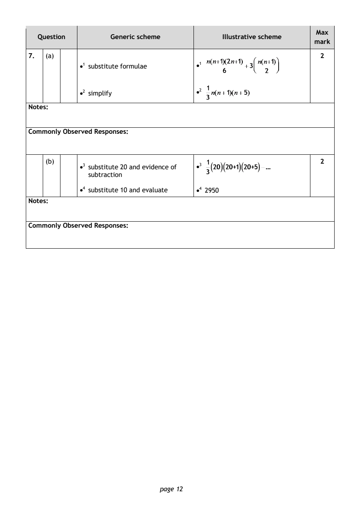
Selectable page text
Max
Question Generic scheme Illustrative scheme
mark
7. (a) 2
•1 substitute formulae •1
•2 simplify •2
Notes:
Commonly Observed Responses:
(b) 2
•3 substitute 20 and evidence of •3
subtraction
•4 substitute 10 and evaluate •4 2950
Notes:
Commonly Observed Responses:
page 12PDF page 13
Paper 1, Question 8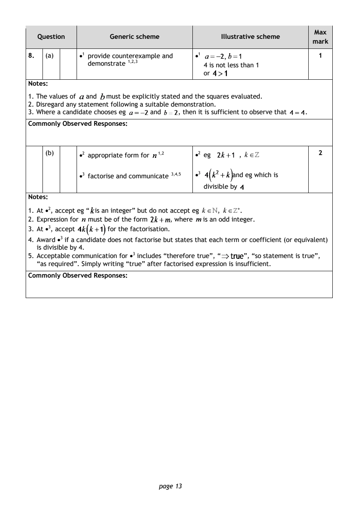
Selectable page text
Max
Question Generic scheme Illustrative scheme
mark
8. (a) •1 provide counter_{,}e₃xample and •1 1
demonstrate ¹^{,}² 4 is not less than 1
or
Notes:
1. The values of and must be explicitly stated and the squares evaluated.
2. Disregard any statement following a suitable demonstration.
3. Where a candidate chooses eg and , then it is sufficient to observe that .
Commonly Observed Responses:
(b) •2 appropriate form for ¹,2 •2 eg , k∈ℤ 2
•3 factorise and communicate ³^{,}⁴^{,}⁵ •3 and eg which is
divisible by
Notes:
1. At •², accept eg “ is an integer” but do not accept eg k∈ℕ, k∈ℤ⁺.
2. Expression for must be of the form , where is an odd integer.
3. At •³, accept for the factorisation.
4. Award •³ if a candidate does not factorise but states that each term or coefficient (or equivalent)
is divisible by 4.
5. Acceptable communication for •³ includes “therefore true”, “ ”, “so statement is true”,
“as required”. Simply writing “true” after factorised expression is insufficient.
Commonly Observed Responses:
page 13PDF page 14
Paper 1, Question 9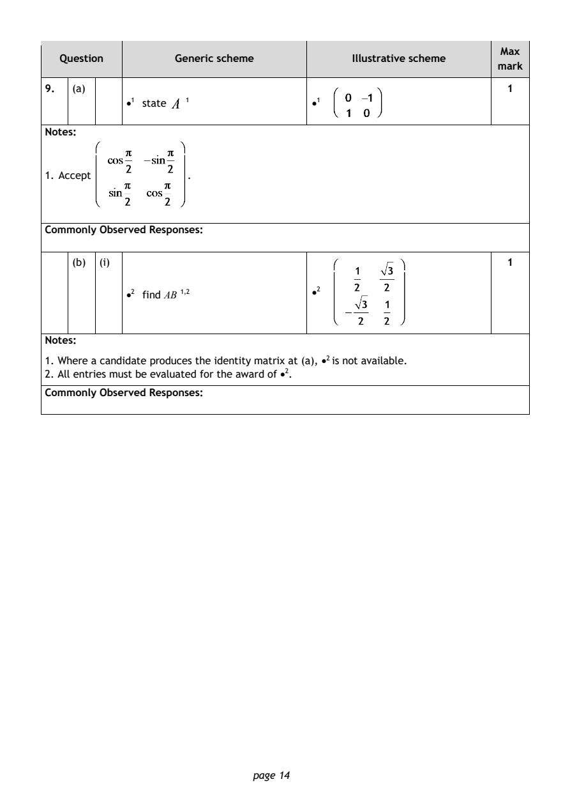
Selectable page text
Max
Question Generic scheme Illustrative scheme
mark
9. (a) 1
•1 state 1 •1
Notes:
1. Accept .
Commonly Observed Responses:
(b) (i) 1
•2 find AB ¹^{,}² •2
Notes:
1. Where a candidate produces the identity matrix at (a), •² is not available.
2. All entries must be evaluated for the award of •².
Commonly Observed Responses:
page 14PDF page 15
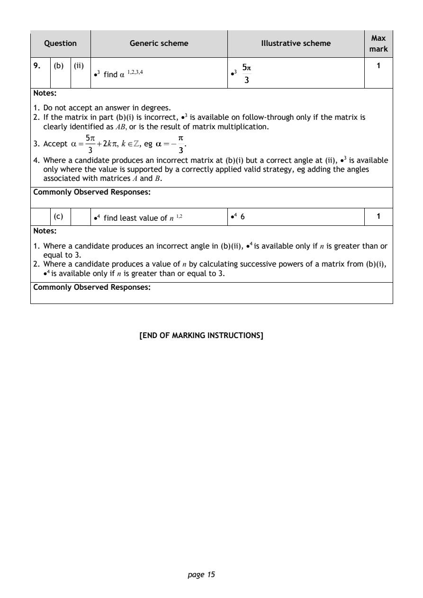
Selectable page text
Max
Question Generic scheme Illustrative scheme
mark
9. (b) (ii) 1
•3 find α ¹^{,}²^{,}³,4 •3
Notes:
1. Do not accept an answer in degrees.
2. If the matrix in part (b)(i) is incorrect, •³ is available on follow-through only if the matrix is
clearly identified as AB, or is the result of matrix multiplication.
5π
3. Accept α= +2kπ, k∈ℤ, eg .
3
4. Where a candidate produces an incorrect matrix at (b)(i) but a correct angle at (ii), •³ is available
only where the value is supported by a correctly applied valid strategy, eg adding the angles
associated with matrices A and B.
Commonly Observed Responses:
(c) •4 find least value of n ¹^{,}² •4 6 1
Notes:
1. Where a candidate produces an incorrect angle in (b)(ii), •⁴ is available only if n is greater than or
equal to 3.
2. Where a candidate produces a value of n by calculating successive powers of a matrix from (b)(i),
•4 is available only if n is greater than or equal to 3.
Commonly Observed Responses:
[END OF MARKING INSTRUCTIONS]
page 15